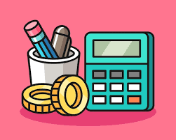
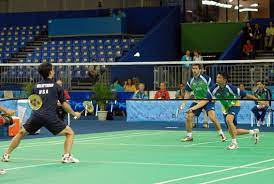
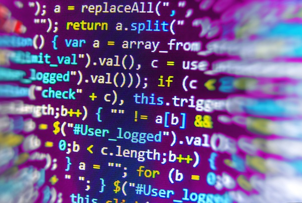

EXPERIENCIA LABOTAL
aprendiz | area contable y financiera
Logré con efectividad una optimización en los procesos de las descargas de los consecutivos en un 50%.
obtuve una gran efectividad en la recolección de los certificados de iva anuales y trimestrales en un 30%.
con cada tarea asignada entendía como se trabajaba y resolvía y creaba una nueva forma de llegar al mismo
resultado pero mayor eficiencia y también pude realizar varios eventos deportivos.
* revisar y analizar informes de comisiones.
* adjuntar los consecutivos de cada mes de los clientes.
* recolección de certificados de la DIAN: anuales, semestrales. y trimestrales.
* inscripción de proveedores a la base de datos contable.
* depreciación de activos fijos.
* conciliaciones bancarias.
* alistamiento y archivo dé facturas.
* realizar bases de datos con información especifica.

Software utilizados
SIESA - medio alto
COMFIAR - medio alto
SG-1 - medio
CRM - medio alto
ZEUS - medio
EXCEL -medio alto
monitor de la UTAP
aculmente llevo estoy en el cargo como monitor aproximadamente tres semanas, una las funciones como monitor son:
obtimizar los computaores tanto de la salas de computo como de los que se les presta a los ptofesores
realizar mantenimiento preventivo a los equipos de computo
parte electrica de la univercidad
parte logistica y administrativa
jugador de badminton
Como deportista profesional en la liga del Valle, mi dedicación y pasión por el bádminton se han convertido en el centro de mi vida.
Durante un período de cinco años, me embarqué en un viaje de constante superación y competición en este apasionante deporte, enfrentándome a desafíos cada vez más exigentes.
Mi punto culminante llegó en el prestigioso torneo de bádminton de la ciudad de Cali. En esa ocasión, junto a mi compañero de dobles masculinos,
demostramos un nivel de juego excepcional. Nuestra ardua preparación y sincronización en la cancha nos llevaron a conquistar la codiciada medalla de oro en la categoría de dobles masculinos,
un logro que no solo nos llenó de orgullo, sino que también destacó nuestro compromiso con la excelencia deportiva.
Sin embargo, mi desafío no se limitó al juego en equipo, ya que también participó en la categoría individual masculina con gran determinación.
A través de enfrentamientos emocionantes y momentos de intensidad, lograrás ganar la medalla de oro en la categoría individual. Este logro individual
consolidó mi posición como un atleta de élite en el mundo del bádminton y reforzó mi reputación como un competidor de alto rendimiento.
Ser un deportista profesional en la liga del Valle y ganar el primer torneo de bádminton en la ciudad de Cali en las categorías de dobles masculinos y
singles masculinos ha sido el punto culminante de mi carrera hasta el momento. Estos logros han sido fruto de años de dedicación, entrenamiento riguroso y
una pasión inquebrantable por el bádminton. Estoy emocionado por continuar representando a mi liga y mi ciudad en futuros desafíos y por seguir trabajando
incansablemente para alcanzar nuevas metas en este emocionante deporte.


ESTUDIOS
tecnico en costos y contabilidad en intenalco
pedio de inicio 2019 | teminacion 2021
Mis estudios en costos y contabilidad me han proporcionado una base sólida de conocimientos y habilidades en el campo de la gestión financiera y
la toma de decisiones empresariales.Durante mi formación académica, adquirió conocimientos en una variedad de materias clave, que incluyen:
1. Contabilidad Financiera: Aprendí a preparar estados financieros, analizar transacciones comerciales y entender los principios contables básicos. .
2. Contabilidad de Costos: Adquirí la capacidad de calcular y asignar costos, realizar análisis de rentabilidad y evaluar el desempeño de los productos o servicios.
3. Contabilidad Financiera: Durante este curso, adquirí una base sólida en los principios contables, lo que me permitió comprender y registrar transacciones financieras de manera precisa.
4. Contabilidad de Costos: Este curso me permitió profundizar en la determinación de costos de producción, análisis de costos y la elaboración de presupuestos,
habilidades fundamentales para la gestión eficiente de recursos en una empresa.
5. Gestión Financiera: Aprender a evaluar la salud financiera de una empresa, realizar análisis de riesgo, y tomar decisiones estratégicas relacionadas con la inversión y financiamiento.
6. Impuestos: Este curso me proporcionó una comprensión detallada de la legislación fiscal, lo que me capacita para asesorar sobre la optimización fiscal y el cumplimiento normativo.
7. Auditoría: Aprendí a evaluar la integridad de los estados financieros y asegurar el cumplimiento de las normativas contables y fiscales, una habilidad valiosa para garantizar
la transparencia en las operaciones de una empresa.
8. Sistemas de Información Contable: Comprendí la importancia de las tecnologías contables y su contribución a la eficiencia y precisión en la gestión de información financiera.
9. Ética en Contabilidad: Aprendí sobre los estándares éticos y profesionales que deben regir la práctica contable, promoviendo la integridad y la confianza en la profesión.
10. Análisis Financiero: Desarrollé habilidades para interpretar estados financieros y evaluar el rendimiento de una empresa a través de ratios financieros y otros indicadores clave.
Desarrollo de sistemas informaticos segundo semestre en la univercidad tecnologica autonoma del pacifico
periodo de inicio marzo 2023
Actualmente en mi programa de estudios en ingeniería en sistemas, he adquirido bases teóricas y prácticas en el área como la programación, el análisis de sistemas y la gestión de bases de datos.
Mi enfoque en esta area me ha permitido aumentar mis habilidades técnicas con conocimientos especializados en el area de sistemas.
Estoy emocionado por seguir desarrollando mis habilidades en ingeniería en sistemas y aplicar mis conocimientos en el campo.
Estoy comprometido con el aprendizaje continuo y la mejora constante, y estoy seguro de que mi pasión y dedicación serán activos valiosos para cualquier equipo o proyecto en el que participe.
Software utilizados
SIESA - medio alto
COMFIAR - medio alto
CRM - medio alto
ZEUS - medio
EXCEL -medio
VISUAL STUDIO CODE
JAVA
HTML

UN POCO MAS SOBRE MI
soy muy fanatico del futbol mas que todo con la seleccion argentina y con el futbol club barcelona,
digamos que siempre me ha llamada la atencion este deporte tanto verlo como jugarlo, digamos que para mi
el deporte es un metodo de relajacion en la cual me relaja y me desahogo puedo estar pasando por moentos
ficiciles y esto es o que hace el futbol por mi, pero tansolo el furbol el badminton que es el deporte
que mas me gusta jugar indibidualmente y que es un deporte de mucha inteligencia mas que de fisico


tambien soy un fanatico de los carros, para mi los automobiles son otra parte de mi vida que me hacen muy
feliz y que me hacen ver el mundo de otra manerea deseo algun dia cumplir mis metas por que mas que un
sueño es un objetivo personal tener los coche que mas me gustan a mi
ford mustang

mercedez benz clase A